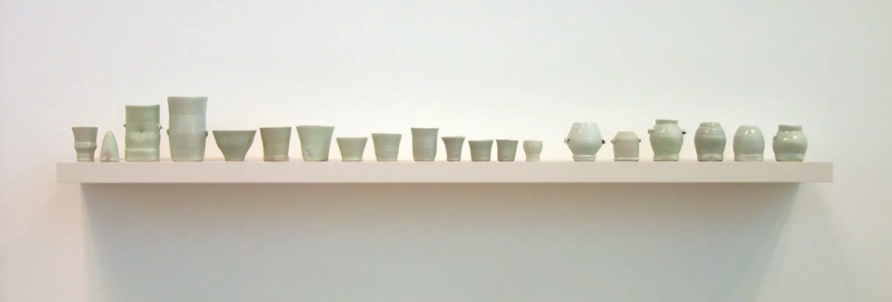
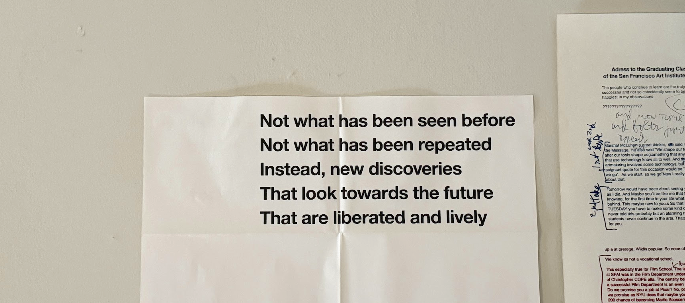
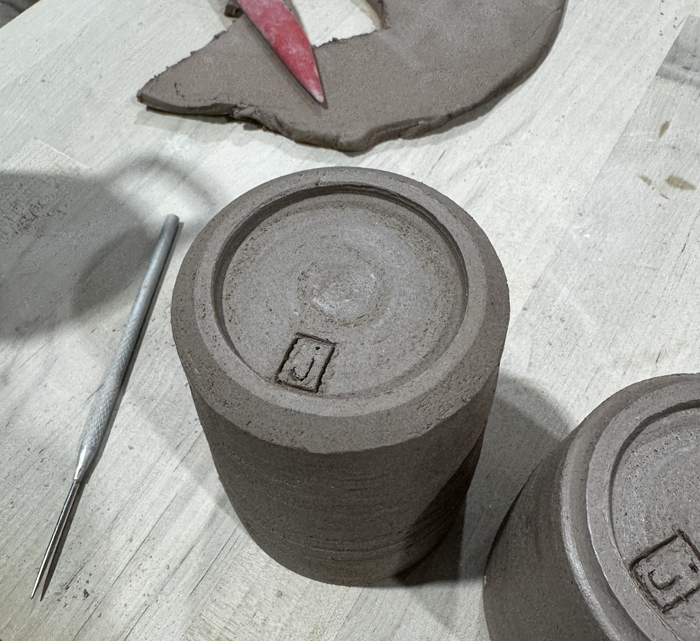

 John Reeve (1958-61, 1966)
Taste goes by many names: intuition, conviction, self-trust, aesthetics. Roughly, it is the ability to make judgements about aesthetic value; to be able to tell the difference between what is and is not beautiful to you.
It turns out that the same ‘good taste’ that applies to food, art, or media can also help find what is meaningful and worthwhile to spend our lives on.
This is largely because taste operates in two distinct and almost opposite modes:
- Type I taste: Exploratory taste that surfaces new forms of beauty you otherwise may not have considered;
- Type II taste: Conviction that drives you to sufficiently go deep on what you already find to be beautiful.
The two both need to coexist to find the right balance between exploring more options and sufficiently going deep on promising ones.
If we look to deeply creative pursuits like writing and mathematics, we find many case studies where that exploratory form of taste — specifically the pursuit of beauty — helped to create a deeper sort of attention that revealed a deeper, more fundamental understanding of the underlying medium that gave them an edge.
“It is not so much, it seems to me, a so-called “brain power” that makes the difference between this mathematician and another, or between one piece of work and another of a same mathematician; but rather the quality of finesse, of the greater or lesser delicacy of this openness or sensitivity, from one researcher to another or from one moment to another in the same researcher. The most profound and fruitful work is also that which attests to the most delicate sensitivity in apprehending the hidden beauty of things.”
— Alexandre Grothendieck, Récoltes et Semailles (translation by Childe)
Though Grothendieck refers to math here, the observation about the importance of “apprehending the hidden beauty of things” generalizes. Annie Dillard relates a tale from a fellow writer who was asked a question by a student:
“Do you think I could be a writer?”
“Well,” the writer said, “I don’t know… Do you like sentences?”
The writer could see the student’s amazement. Sentences? Do I like sentences? I am twenty years old and do I like sentences? If he had liked sentences, of course, he could begin, like a joyful painter I knew. I asked him how he came to be a painter. He said, “I liked the smell of paint”
If you’re going to be a gardener, it helps to like the smell of roses. If you’re going to be a writer, it helps to appreciate sentences. That, however, only happens once you’ve spent many afternoons reading.
— Annie Dillard, The Writing Life
For any creative pursuit, this ability to notice more deeply is what distinguishes good from great. This specific pursuit of what feels beautiful gives rise to a form of attention that starts to reveal the infinite depth of the world. It surfaces nuances you hadn’t seen before even though nothing about your actual senses has changed. You begin to see wider and deeper.
This exploratory form of taste also affords a certain lightness and freedom to how we play with and consider nascent ideas.
When I find the craftsmanship of one mug more aesthetic than another, I’m not expected to make it legible in terms of what has already been done before. I know that I really like sharp walls that are slightly tapered outwards. They shouldn’t be too thin or the piece will feel flimsy and fragile but it also shouldn’t be too heavy or it will feel like a heavy rock in your hand. I like more speckled clay bodies that are more earthy and warm in tone paired with slightly cooler glazes.
This was developed over many hours of actually throwing and making pottery, not from feeling pressured to compare it to what other people have done. I know that if I did feel it, I would have spent a lot more time learning and reading about various pottery techniques, the names of different forms, and what glazes have been popular on social media rather than actually going and working with clay.
We have built up an instinctive habit of looking things up and seeing how other people have done it before trying it for ourselves. But the downside is that this habit primes our brains to value our work in the context of the taste of others rather than of our own. We have outsourced our value systems for what is good and bad (how we may judge aesthetic value) to other people.
If we outsource our opinions all the time, we no longer exercise our own taste and lose the capacity to derive our own value systems. Like a muscle, it decays without frequent use and we default to liking and valuing what everyone around us already likes or does. As with anything mediating, the act of relying on the taste of society as a proxy for our own effectively serves as a band-pass filter, dampening the range of what our exploratory taste might consider.
Looking at the history of scientific progress, we see plenty of evidence on how this reliance on the taste of committees and society broadly only serves to inhibit progress. Managed creativity can, at best, produce only what its managers specify. All that remains are the ideas that live in the Overton Window.
When we try to limit what scientists work on via broad-stroke directives and awards for very specific kinds of work that consensus deems best for progress, we can get only what we ask for and nothing more. The limit is then what the research director can imagine and nothing more — this presumes the person doing the selecting has the best overall taste as to what is worthwhile. In the consultancy field, the old adage was that successful consultants merely delivered the advice their customers wanted to hear. Do we really want that of our researchers?
“Nature does not respect consensus. We cannot expect to actually make progress simply because we have agreed among ourselves that progress lies in a particular direction. Unless, of course, that direction is a simple extrapolation from what has gone before, but such objectives usually serve only to consolidate — unless researchers are free to follow interesting observations wherever they might lead.”
— Donald W. Braben, Scientific Freedom: The Elixir of Civilization
Braben, in that last part, emphasizes the importance of freedom to allow scientists to follow their own research taste. Vannevar Bush: “scientific progress on a broad front results from the free play of free intellects, working on subjects of their own choice, in the manner dictated by their curiosity for exploration of the unknown.” Creativity is the essence of the human spirit, and flowers best when it’s unconstrained.
Cultivating that Type II taste — the deep-seated conviction — helps to avoid unnecessary constraints on our exploratory taste. It helps to create their own possibilities for what is possible, outside what other people believe, relying on their intrinsic, subjective judgement of what feels correct. This is what produces novel and ground breaking work, not research mandates or broad directives.
The poster in my room above my bed which I got from a booth at the SF Art Book Fair.
Similarly, Simone Weil believed that we gain insights not by going in search of them, but instead by being receptive to the true nature of the thing itself. In her teaching, she didn’t limit the way students oriented themselves towards problems, noting that most education systems fixate students to an agenda where they are always searching for a singular right answer to the problem rather than taking the time to really feel and explore.
“The great human error is to reason in place of finding out”
— Simone Weil, Gravity and Grace
This lightness in the pursuit of insights that Weil teaches is similar to what C Thi. Nguyen calls intellectual playfulness. When an intellectually playful person evaluates new ideas, they don’t care about plausibility or legibility. They care about the idea itself and the thrilling joy-rides of discovery.
Nguyen argues that this intellectual playfulness actually has some clear epistemic functionality for us. A pure ‘truth-seeker’ has an interest in always getting it right. This attitude constrains the search space, focusing searches on plausible paths to explore and discarding what is implausible or beyond the pale. However, because their assessment of plausibility will always proceed from their standing system of beliefs, even their most rational epistemic attempts can be caught in what Nguyen calls an epistemic trap: belief systems that make us shut down a line of questioning before exploring its validity. These traps constrain our exploratory taste.
One specific epistemic trap that has been particularly fatal to exploratory taste is the fear of being wrong.
“One who fears to be wrong is powerless to discover. It is when we are afraid of making mistakes that the mistake inside us becomes immovable like a rock. Because in our fear, we cling to what we have decreed to be “true”, or what has always been presented to us as “true”. If we are moved, not by the fear of seeing an illusory security vanish, but by a thirst for knowing, then error, like suffering or sorrow, will cross us without ever becoming frozen, and the trace of its passage will be a renewed understanding.”
— Alexandre Grothendieck, Récoltes et Semailles (translation by Childe)
It because of this fear that we default to settle on what is popular or what has been done before. This, to me, is the clearest example of why the ineffability of taste is actually instrumentally useful. What appears to be the ‘optimal’ or ‘right’ thing to work on according to the taste of others may end up in these epistemic traps.
By allowing ourselves to refine our own taste and to pursue what we find intrinsically beautiful, it affords a certain lightness to how one might hold ideas and knowledge. It lets us try ideas on for size without needing to immediately jump to explain it to others. Ultimately (and perhaps paradoxically), this lightness allows us to be better seekers of truth.
A common thread to observe here is that a lot of early revolutionary thinkers didn’t worry themselves with what was ‘optimal’ or deemed right by consensus, but rather what was beautiful and interesting. This incidentally helped them to really lean into their taste as conviction.
At times, this led them to repeat work that had already been done (like Einstein reinventing parts of statistical physics or Grothendieck working out his own formal definitions for length). But by the time they did hit the bounds of human knowledge, it no longer mattered to them because they just kept doing what they were already doing: following their own taste for what was beautiful.
The societal pressure is to conform to what other people think and do; it is always a psychologically risky endeavor to do something new. Thus, any act of creation necessarily involves strong opinions about how the world should work — strong enough to survive the sharp edges of doubt and the false allure of safety in what is known and what has been done.
“Creation is the act of bringing something nonexistent into reality. You have to have strong opinions about how the world should work. You have to think that things should be a certain way, that you prefer this color over that, this form of walking over another, this sense of beauty over theirs, this way of approaching the world over some other. Taste gives you the capability and the urgency to imagine.”
— Spencer Chang, creative seeing
Unfortunately, the stereotypical advice of developing the capacity to do novel work plays into the lone genius myth. Pablo Picasso: “Without great solitude, no serious work is possible.” James Baldwin: “Perhaps the primary distinction of the artist is that he must actively cultivate that state which most men, necessarily, must avoid: the state of being alone.”
In practice, however, what they are referring to as solitude is not being physically isolated but rather more of a state of mind. They are putting themselves in a state where the opinions of others do not bother them and where they reach a heightened sensitivity for the types of questions worth asking — they’ve developed their taste as a form of conviction1.
Having strong taste doesn’t mean that you never look to others for inspiration and ignore what others find beautiful. But rather, strong taste gives you the psychological safety to enable you to look to others for inspiration and help you attend to things you otherwise would not have noticed. Strongly developed taste to bring more things into your periphery, it lets us interface with others as potential sparks of inspiration rather than the prime directive for what to believe in.
So how might we cultivate this taste? Quoting Voltaire: “In order to have taste, it is not enough to see and to know what is beautiful in a given work. One must feel beauty and be moved by it.”
The world reveals itself to those who attend to it.
Each day is an exercise in developing taste. That’s all life is really — a giant sequence of decisions. It is built over time through repeated applications. It requires intention, focus, and care. It’s a process of peeling back layer after layer, turning over rock after rock. It is the manifestation of self-confidence in what we find beautiful and aesthetic.
Do things without recipes more often. Trod the unbeaten path more often and take note of how things feel. Do you find yourself noticing something that wasn’t there before? That perhaps after a certain number of hours of obsessing over how to get a good tone on the guitar, you can tell how the temperature of the room affects the sound of the strings? Maybe for the first time, you realize that the songs the birds sing are all a little different, the robin sounds different from the chickadee and so on.
Take a curious and inherently observatory nature toward the world and let it serve as constant opportunities to test your taste.
When I think about cultivating taste, it appears to me much like how George Saunders approaches curating his own taste in good writing:
The way I revise is: I read my own text and imagine a little meter in my head, with “P” on one side (“Positive”) and “N” on the other (“Negative”)…
This involves making thousands of what I’ve come to think of as “micro-decisions.” These are instantaneous, intuitive – I just prefer this to that… I just have a feeling and react to that feeling, in the form of a cut phrase, or an added word, or an urge to move this whole section, and so on. And then I do that over and over, for months, sometimes years, until that needle stays up in the “P” zone for the whole length of the text…
With each choice, even the smallest ones, the story becomes more and more…well, it becomes more [yours], you could say. There’s more of [your] essential nature in it, more of what will distinguish [you] from all of those other writers out there. And gradually, the story starts to become something [you] couldn’t have foreseen when [you] started out – bigger, more complex, smarter, funnier, whatever.
— George Saunders, First Thohts on Reviision
Over time, just like how we anneal metal, our taste becomes more refined and we are more sure in what feels optimal to us. Crafted well, taste gives us the tools to have more agency over our own lives and how we define meaning.
What greater thing could there be to cultivate?

Thank you to Marley, Anson, Jasmine, Spencer, and Kelly for reading and giving feedback on early drafts.
Footnotes
-
Though this has some historical precedence for happening through physical isolation (e.g. Newton, Grothendieck, Pascal, Baldwin), I largely believe the lone genius myth is false. The lone genius is a proxy for being a hard worker but it isn’t the only way of doing great work. ↩